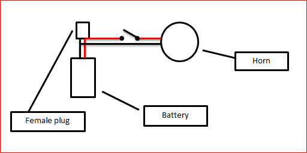

12 V battery. I used a small Century PS1208 battery
Motorbike Horn - you can get these on email cheaply
SPST switch
Wire
Project box
male/female connector
STEP 2Step 2: Step 1 - Adding the Horn to the Bike
Remove the brake caliper
Adjust the horn bracket if necessary. I had to give it a couple of bends to ensure it would fit properly - see below.
You can use the bolt that the caliper attaches to the bike to hold the bracket in place
It's then a simple job of attaching the calpier back on with the horn bracket attached.
STEP 3Step 3: Step - 2 Wiring-up the Battery Switch and Horn

You will need to add a female plug to the battery (and the male end to a battery charger). - see below.
You will also need to add some wires from the plug to the switch and horn. Make sure that these wires are longer than needed as you will need to position the battery on the bike and might need the length.
Next place the battery into a project box. You will need to cut-out a small section for the female plug to stick out of. Make sure everything fits nice and snug.
Wiring switch
To add the switch I decided to drill 2 holes in the handle bar so i could hide the wires. It's up to you if you want to do this or not.
Here's the tricky bit - you will need to thread the wire for the switch through the bars and try and coax it out the other end. i tried a few different methods, but the one that worked best was attaching some string to the wire and threading it through with this.
Once through, wire-up the switch and attach it to the handlebars.
STEP 4Step 4: Step 4 - Attaching Everything to Your Bike
Find the best spot on your bike to attach the project box with battery inside. I attached mine with cable ties.
Attach all of the wires from the switch to the horn and battery (see schematic - step 3)